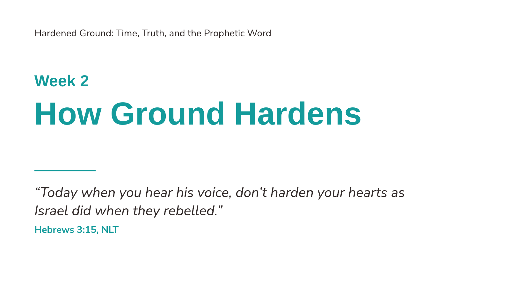
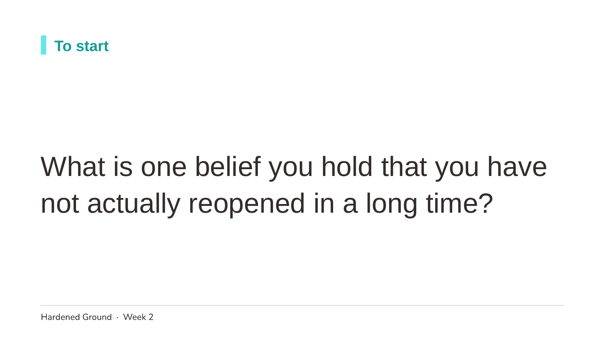
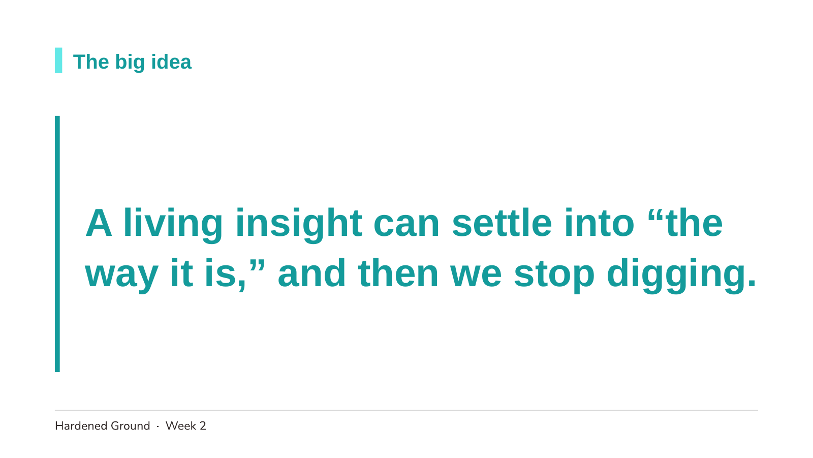
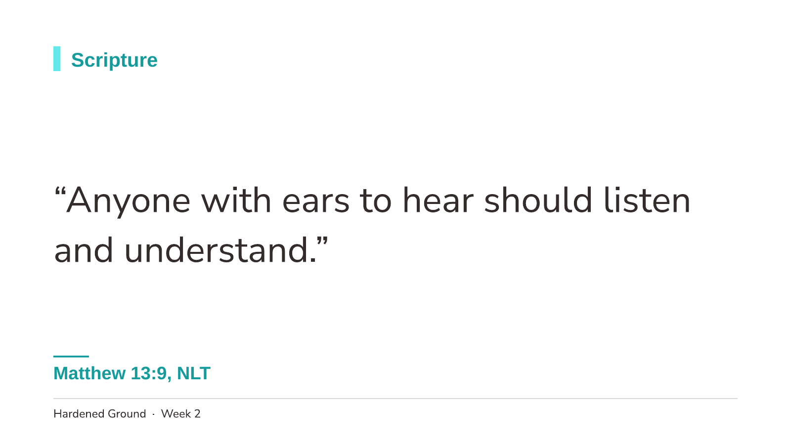
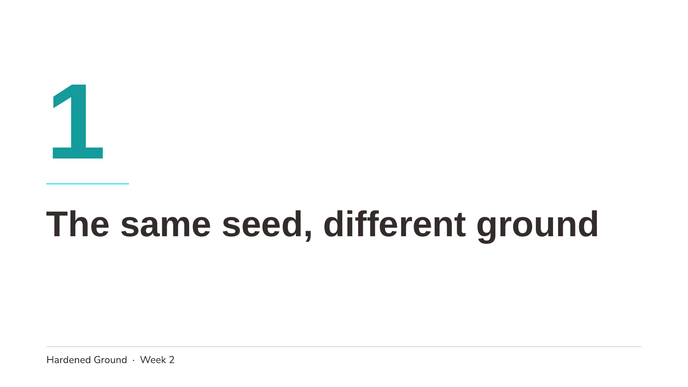
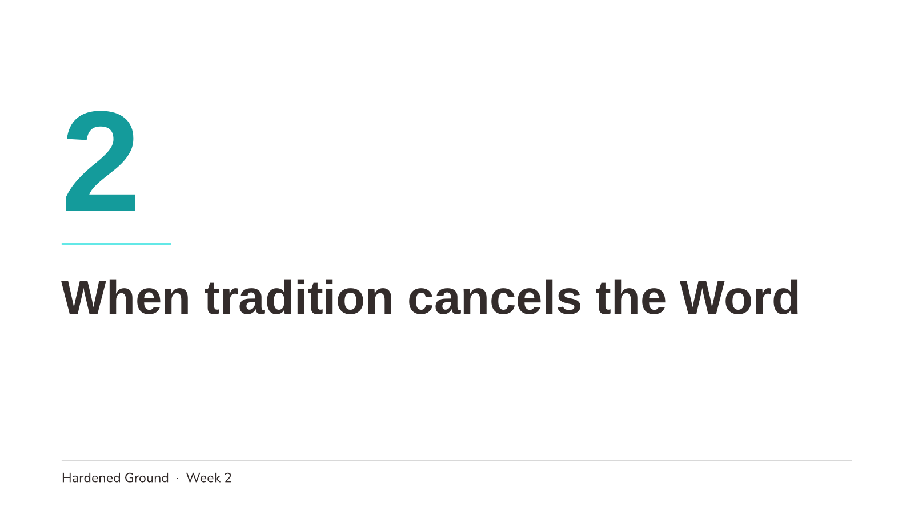
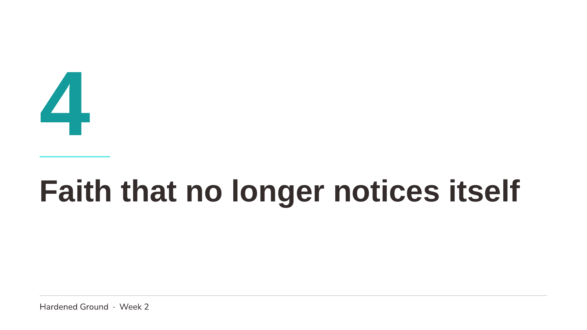
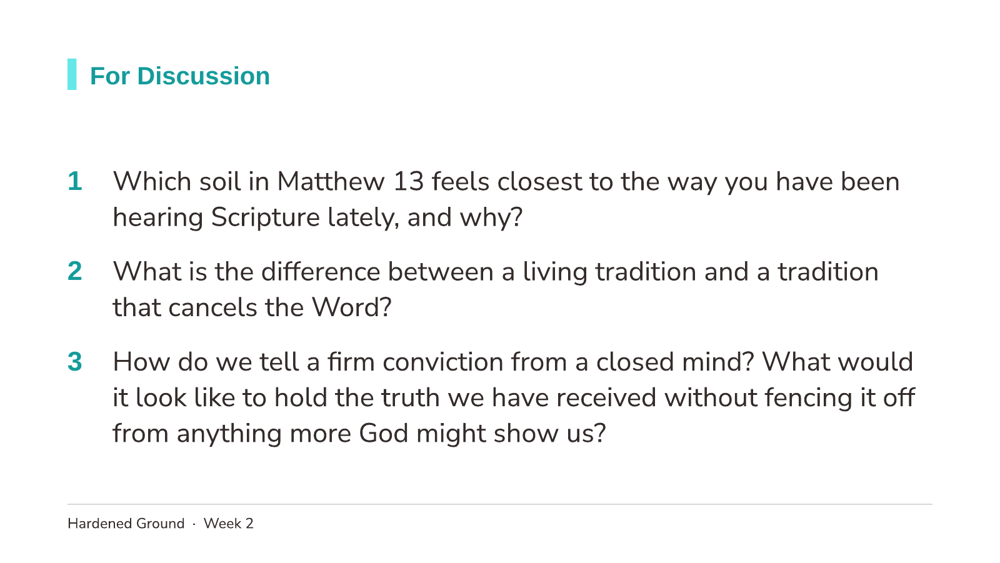
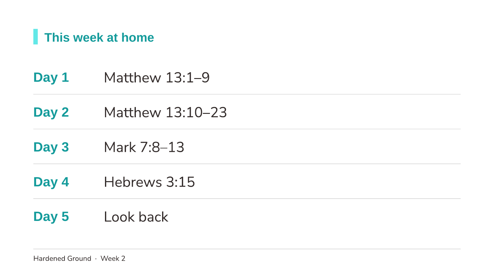
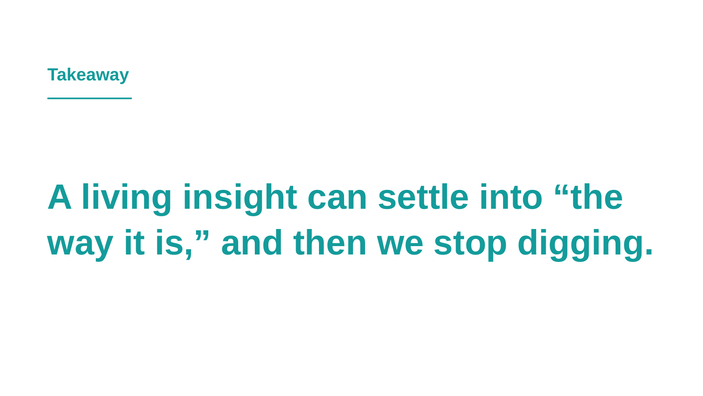

Week 2
How Ground Hardens
Takeaway. A living insight can settle into “the way it is,” and then we stop digging.
Opening question. What is one belief you hold that you have not actually reopened in a long time?
Setting
We look at how understanding hardens, in Scripture and in ordinary church life.
Context
Matthew 13 is a parable about hearing. The same seed meets very different ground. In Mark 7, Jesus confronts a tradition that has become so settled it cancels the word of God itself. Both texts are about what happens when a heart, or a community, stops letting the Word in.
Scripture
Texts. Matthew 13:1–23; Mark 7:8–13
“Anyone with ears to hear should listen and understand.”
Matthew 13:9, NLT
“And so you cancel the word of God in order to hand down your own tradition. And this is only one example among many others.”
Mark 7:13, NLT
Reflection
- The same seed, different ground. Walk slowly through the soils of Matthew 13: the path, the shallow ground, the thorns, and the fertile soil. Notice that some ground is already hard before the seed ever lands. The seed is the same in every case. The difference is in the hearing.
- When tradition cancels the Word. In Mark 7:8–13, Jesus has no quarrel with memory or inheritance as such. What he names is a tradition that has settled so firmly that it now overrules God’s command. A practice that once may have been alive has become the ground people stand on, and then they stop digging.
- Sedimentation in plain words. The philosopher Edmund Husserl called this Sedimentierung, sedimentation: meanings that were once achieved later settle and are simply taken for granted. Peter Berger and Thomas Luckmann, in The Social Construction of Reality (1966), described how meanings harden until they feel like the natural order of things. You don’t need the technical term to know it when you hear it. It can sound as ordinary as, “I already studied this, and you will not change my mind.”
- Faith that no longer notices itself. Søren Kierkegaard, in Practice in Christianity (1850), argued that in Christendom everyone is a Christian as a matter of course, and so the real thing gets lost. The sharp edge of the gospel gets smoothed down into a cultural habit. That is sedimentation in the life of the church. In this course we are trying to loosen that ground so the Word can be heard again.
For Discussion
- Which soil in Matthew 13 feels closest to the way you have been hearing Scripture lately, and why?
- What is the difference between a living tradition and a tradition that cancels the Word?
- Where have you seen a once-living insight harden into “the way it is” in a church, a family, or your own thinking?
- How do we tell a firm conviction from a closed mind? What would it look like to hold the truth we have received without fencing it off from anything more God might show us?
- If the ground of your own heart has hardened somewhere, what would loosening it actually require this week?












